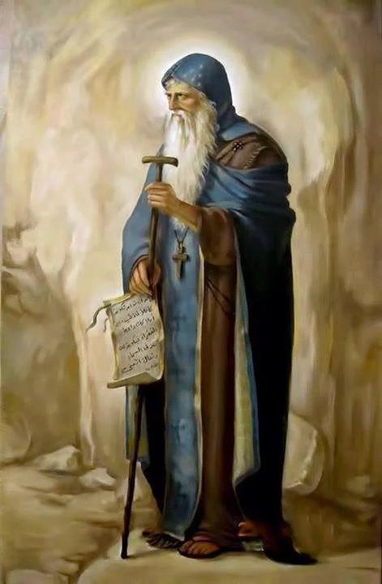

وجد الأنبا نطونيوس حصناً مهجوراً منذمده طويلة لدرجة انه كان ممتلئاً بالزحافات،وكان علي ضفة النهر المقابله،عبر النهر اليه وسكن هناك،اما الزحافات فقد غادرت المكان في الحال كأنما قد طاردها شخص ما ،علي أنه بني المدخل واكمله"واختزن أرغفه لمدة 6 شهور وهذه عادة اهل طيبة،وكثيراً ما حفظوا الارغفة سنة كاملة،واذوجد مياهاً داخله نزل كانه ذاهب الى مزار وسكن فيه بمفرده دون أن يخرج منه قطعاً او يتطلع الي اي شخص جاء اليه،وهكذا قضي وقتاً طويلا في تدريب نفسه وكان يتقبل الارغفه التي تدلي اليه من فوق مرتين في السنه

من دراسة كتاب حياة أنطونيوس الذي وضعه مُعاصرهُ القديس البطريرك أثناسيوس الرسولي
تبين لنا أن القديس أنطونيوس ذهب الى موضع هذا الدير وعمره حوالي 35عاماً نحو عام 286م،ووجَدَ في الموضع حصناً مهجوراً منذ مدة طويلة...وكان علي ضفة النهر المقابلة،عَبر النهر إليه،وسكن هناك علي إنه بنى المدخل وأكمله ...وإذ وجد مياهاً داخله
نزل وكانه ذاهب إلي مزار وسكن فيه بمفرده دون أن يخرج منه قطعياً أو يتطلع الي أى شخص جاء إليه.وهكذا ظل زهاء عشرين عاماًيدرب نفسه في الوحدة
لا يخرج قطعياً ويندر أن يراه أحد.أي أنه مكث في الدير وحده من نحو عام 286م الى عام 306م تقريباً
بعد هذا لما كثر الذين ارادوا برغبة حارة أن يقلدوا نسكه،وأتى معارفه وبدأوا يقتحمون الباب،خرج اليهم متعمقا في الاسرار وممتلئاً من روح الله،ولاول مرة رؤي خارج الحصن من اولئك الذين أتوا لرؤيته.اقنع الكثيرين لاعتناق حياة الوحدة،وهكذا حدث أخيراً أن أقيمت الصوامع حتى في الجبال
وعُمرت البرية بالرهبان الذين خرجوا عن شعبهم، وسجلوا انفسهم ضمن سكان السماء وهم علي الارض"اى ان الحياة الديرية والرهبانية نشأت أول ما نشأت بتجمع الرهبان تحت قيادة ابيهم القديس العظيم الأنبا أنطونيوس
عند سكنه الاول في دير الميمون وذالك قبل ذهاب القديس للسكن في الجبل الجواني بديره الحالي داخل الصحراء الشرقية
وعلي هذا فإن دير الميمون يعتبر تاريخياً أقدم منشأة لاقدم دير عُرف في تاريخ الحياة الرهبانية،ليس في مصر وحدها بل في العالم كله...وهكذاصارت صوامعهم في الجبال هياكل مقدسة مكتظة بجماعات الاتقيا الذين كانوا يسبحون الله،ويرنمون المزامير ويحبون القراءة ويصومون ويصلون ويفرحون برجاء الامور العتيدة ويكدون في إعطاء الصدقة
ولما حل الاضطهاد في الكنيسة بين عامى 303-311م ترك القديس دير الميمون ونزل إلي الإسكندرية ليؤازر الشهداء ويشجعهم إلي أن كف الاضتهاد،فعادالي صومعته ثانية،وهناك جرت كثير من آيات الشفاء وإخراج الارواح النجسة...وأشياء كثيرة اخرى عن طريق الانبا أنطونيوس عملها الرب،لان الكثيرين من المتالمين كانو ينامون خارج صومعته،وعندما
كان يرفض فتح بابه شفوا بإمانهم وصلواتهم الصادقة،لاجل هذا ارتحل الأنبا أنطونيوس من دير الميمون سكنه الاول في التوحد وذهب مسيرة ثلاث ايام وسكن في الجبل الجواني في عام لا نعلم تحديده سوي أنه رحل بعد عام 311م،وكان القديس من وقت لاخر
ينزل لافتقاد الاباء الرهبان،الذين توحدوا بمنطقة دير الميمون وتتلمذوا علي يديه،ثم يعود ثانية الي وحدته في الجبل الجواني ،وفي دير الميمون تمت معظم مقابلاته مع كبار الزوار و الفلاسفه اليونانيين،وفيه دارت أحاديث وعظاته التقوية